📊 23 Encuestas cuantitativas
Aplicadas a personas económicamente activas con múltiples fuentes de ingreso, registrando un promedio de 2,22 fuentes de ingreso por persona.
Personas con múltiples fuentes de ingreso (especialmente emprendedoras que combinan sueldo fijo con proyectos paralelos) que sufren una "falsa sensación de liquidez" al ver su saldo bancario unificado y terminan mezclando fondos y descapitalizando su negocio por accidente.
Bolsillos App elimina el saldo total consolidado de la vista inicial y traza fronteras visuales estrictas por fuente de ingreso, permitiendo registrar movimientos con solo 2 campos obligatorios en ≤ 10 segundos y alertando en lenguaje coloquial antes de gastar fondos de reposición.
Diseño final aplicando el Sistema de Diseño oficial: separación perceptual por bolsillo, registro rápido y prevención de sobregiro.
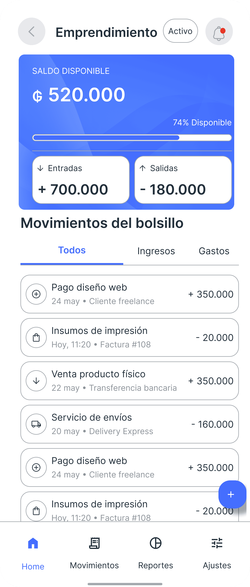
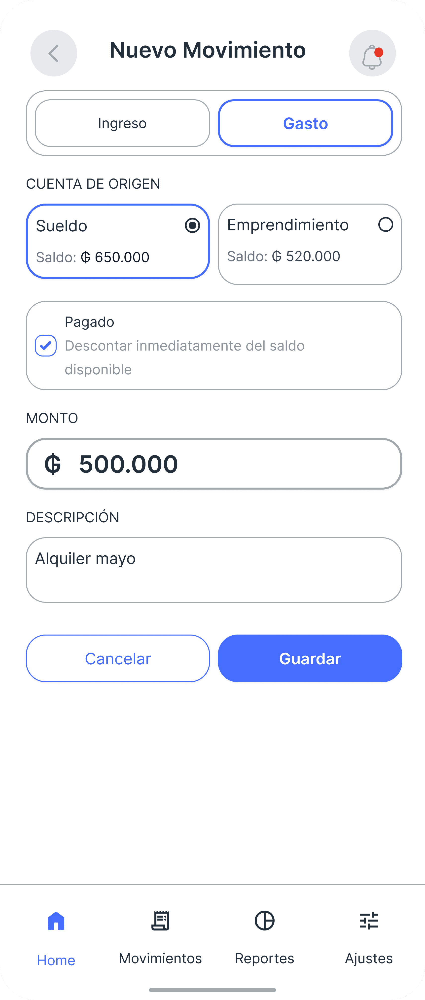
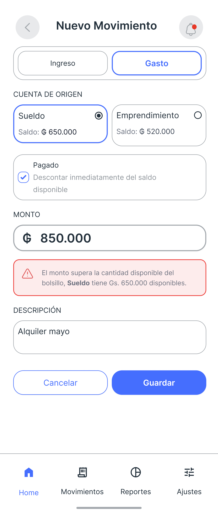
Objetivo de investigación: Averiguar cómo las personas con múltiples ingresos manejan su dinero día a día y validar si el desorden deriva de falta de organización o de la fricción excesiva (carga cognitiva) de las herramientas actuales.
Aplicadas a personas económicamente activas con múltiples fuentes de ingreso, registrando un promedio de 2,22 fuentes de ingreso por persona.
Realizadas a usuarias con perfiles híbridos de alta carga operativa (trabajo fijo en el sector de tecnología + 2 emprendimientos paralelos).
Se utilizó Gemini para normalizar transcripciones crudas, generar distribuciones numéricas y extraer etiquetas para el Affinity Mapping, verificando manualmente cada resultado contra las citas textuales originales.
Sienten una "falsa sensación" de tener más dinero del que realmente pueden gastar al ver su saldo bancario unificado.
Admiten mezclar fondos personales y del negocio ("a veces" o más), corroborado por 1 de 2 entrevistadas que usa su sueldo fijo para reponer insumos.
Reportan dificultad de media a muy difícil para identificar a qué fuente pertenece su saldo; 2 de 2 entrevistadas no tienen certeza de si sus emprendimientos dejan ganancias reales.
Condicionan clasificar sus ingresos a que sea un proceso "muy rápido y fácil"; 2 de 2 entrevistadas expresaron frustración con el registro manual.
"Lo primero que me genera es miedo de estar gastando dinero que no debería, lo que es para reponer mis productos por ejemplo."
"Tedioso, porque no hay un plan perfecto donde pueda registrarlo perfectamente. [...] Normalmente se encuentran inconsistencias."
"La verdad no sé si mis emprendimientos me dejan realmente ganancias."
La fricción de los métodos de registro manual genera una falsa sensación de liquidez que termina descapitalizando los emprendimientos.
19 de 23 encuestados mezclan fondos por dificultad para separarlos y el 87% siente una falsa sensación de riqueza ante el saldo unificado.
"Lo primero que me genera es miedo de estar gastando dinero que no debería, lo que es para reponer mis productos por ejemplo." (Entrevista 2).
Sin fronteras visuales claras y de esfuerzo casi nulo, el usuario asume gastos que el emprendimiento no puede sostener y opera a pérdida sin saberlo.
El límite exacto de tolerancia a la carga manual (clics o segundos máximos) antes del abandono definitivo.
✓ Decisión UX Enfocar el diseño en la separación visual inmediata y el registro ultrarrápido en lugar de reportes contables complejos.
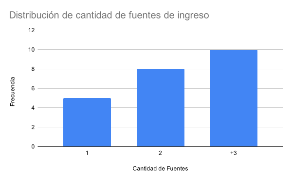
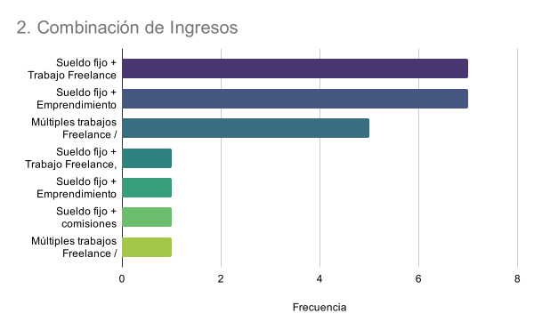
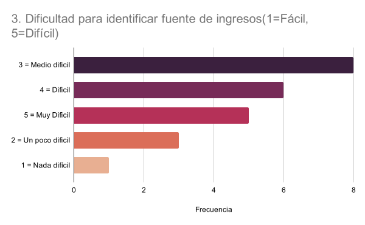
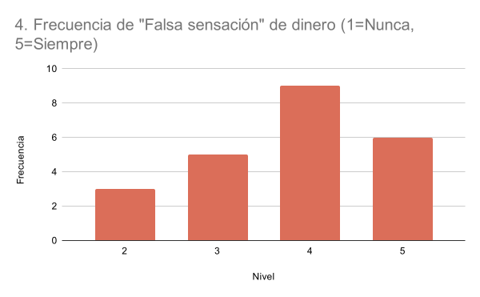
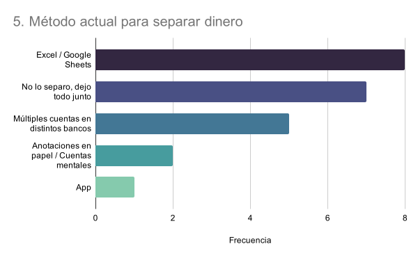
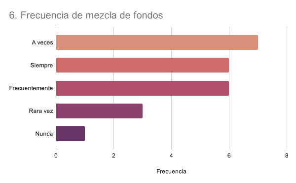
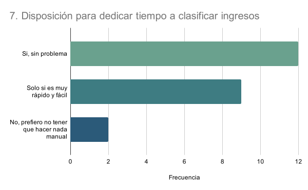
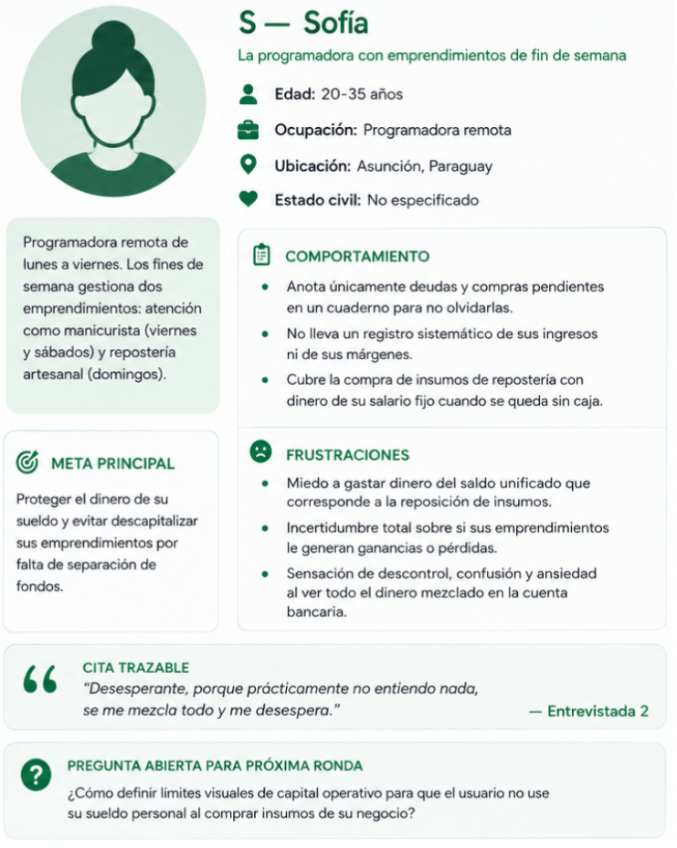
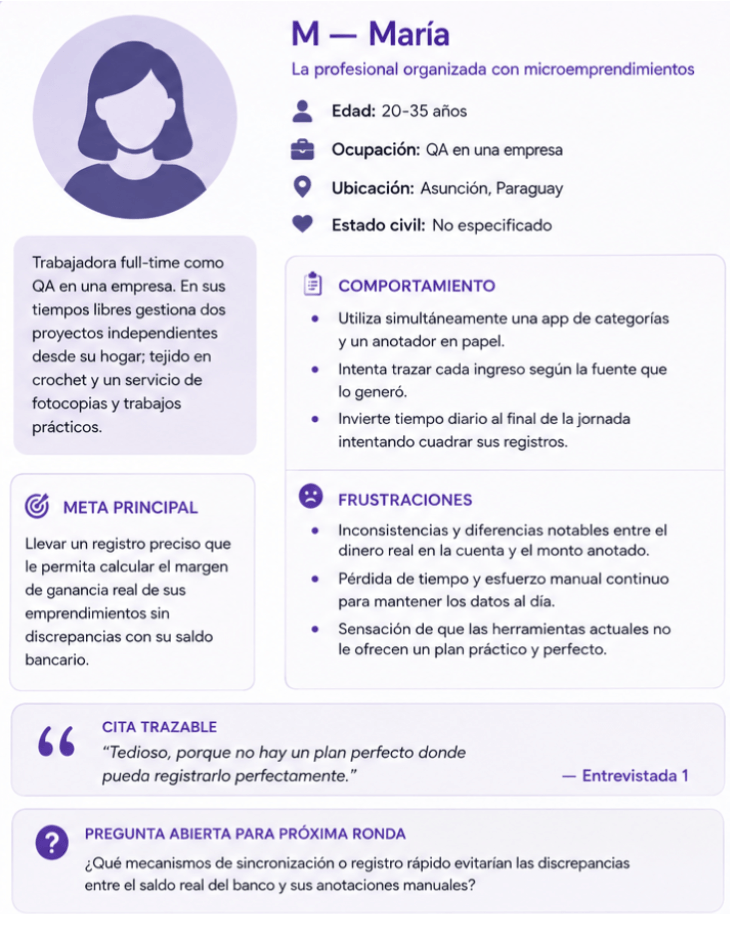
Sintetizamos la investigación en una Persona primaria basada en datos reales, su mapa de empatía, el viaje crítico de compra de insumos y la matriz de trazabilidad hacia requisitos verificables.
Trabajo fijo remoto de lunes a viernes y alta carga laboral en fines de semana con dos emprendimientos paralelos. (Perfil complementario identificado: "La Organizadora Frustrada").
Evitar descapitalizar su negocio y saber con exactitud cuánto dinero libre puede gastar hoy sin miedo a comprometer la reposición de mercadería.
Abandona registros manuales por alta fricción; consulta sus números de forma reactiva justo antes de comprar y subsidia su negocio con su sueldo por error.
| Etapa del Viaje | Acción de la Usuaria | Impacto Emocional y Cognitivo | Nivel de Fricción |
|---|---|---|---|
| 1. Antes (Recepción y revisión) |
Abre la aplicación de su banco y observa un único saldo bancario unificado donde conviven su sueldo y las ventas. | Experimenta una falsa sensación de liquidez seguida inmediatamente de miedo a gastar dinero comprometido. | ⚠️ Severidad 3 — Alta incertidumbre |
| 2. Durante (Intento de gestión y compras) |
Frente al mostrador necesita comprar insumos urgentes; intenta calcular mentalmente cuánto pertenece al negocio bajo estrés. | Termina pagando y mezclando fondos personales y del emprendimiento por urgencia operativa. | ⛔ PUNTO DE FRICCIÓN CRÍTICO |
| 3. Después (Cierre de mes) |
Intenta conciliar lo que tiene en el banco con sus notas en papel o planillas. | Encuentra inconsistencias insalvables entre lo real y lo anotado → abandona el registro con desesperación. | ⛔ Abandono de herramienta |
La emprendedora con múltiples fuentes de ingreso necesita trazar fronteras invisibles pero estrictas sobre su dinero disponible en tiempo real, debido a que ver su saldo bancario unificado le genera una "falsa ilusión de riqueza" que la empuja a devorar los insumos de su propio negocio por accidente.
¿Cómo podríamos separar perceptualmente los fondos de distintas fuentes desde el segundo en que ingresan a la cuenta, para que el usuario pueda tomar decisiones de compra inmediatas en el mostrador sin miedo a descapitalizarse?
| Hallazgo de Investigación | Historia de Usuario (HU) | Requisito Funcional (RF) | Requisito No Funcional (RNF) |
|---|---|---|---|
| 87% (20/23) sufre "falsa sensación de liquidez" al ver el saldo bancario unificado. | HU1: Como emprendedora reactiva, quiero conocer instantáneamente el dinero libre para gastos personales, para evitar usar fondos del negocio por error. | RF1 / RF2: Crear "bolsillos" independientes por fuente y mostrar saldos separados por defecto (ocultando el saldo consolidado total). | RNF (Usabilidad): Saldos separados visibles en la pantalla principal sin necesidad de clics ni scroll. |
| 39,1% (9/23) exige rapidez; 2/2 entrevistadas sufren frustración con el registro manual. | HU2: Como organizadora frustrada, quiero asignar fuente de origen al recibir un ingreso, para evitar cruces e inconsistencias a fin de mes. | RF3: Registrar movimiento financiero con un máximo de 2 campos obligatorios (monto y bolsillo destino/origen). | RNF (Eficiencia): Tiempo promedio de registro de una transacción ≤ 10 segundos. |
| 82,6% (19/23) no distingue origen de su saldo; 2/2 entrevistadas desconocen si tienen ganancias reales. | HU3: Como emprendedora reactiva, quiero ver el balance (ingresos menos egresos) por negocio separado de mi sueldo fijo. | RF4 / RF5: Cálculo automático de balance neto por bolsillo filtrado por rango de fecha. | RNF (Rendimiento): Actualización visual del balance en < 2 segundos tras cada registro. |
| Inconsistencias frecuentes en registros y miedo constante a gastar dinero de reposición. | HU4 / HU5: Como usuaria, quiero corregir errores de carga y recibir una advertencia clara antes de gastar más de lo que tiene un bolsillo. | RF6 / RF7: Editar transacciones históricas + Alerta de sobregiro con opciones explícitas "Cancelar" o "Continuar de todos modos". | RNF (Datos y UX): Log de trazabilidad de ediciones históricas y alerta redactada en lenguaje coloquial no punitivo acompañado de ícono ⚠️. |
| Hallazgos complementarios (contexto de compras de insumos y respaldo externo). | HU6, HU7 y HU10: Notas rápidas de contexto, recordatorio de reposición y portabilidad de datos. | RF Complementarios: Notas cortas opcionales (HU6), lista de insumos pendientes por bolsillo (HU7) y exportación de historial a CSV (HU10). | RNF (Compatibilidad): Teclado predictivo móvil nativo y archivo CSV codificado en estándar UTF-8. |
Exploramos 8 enfoques divergentes mediante sesiones de lluvia de ideas y Crazy 8s para responder a la pregunta HMW antes de converger en la arquitectura de la pantalla principal.
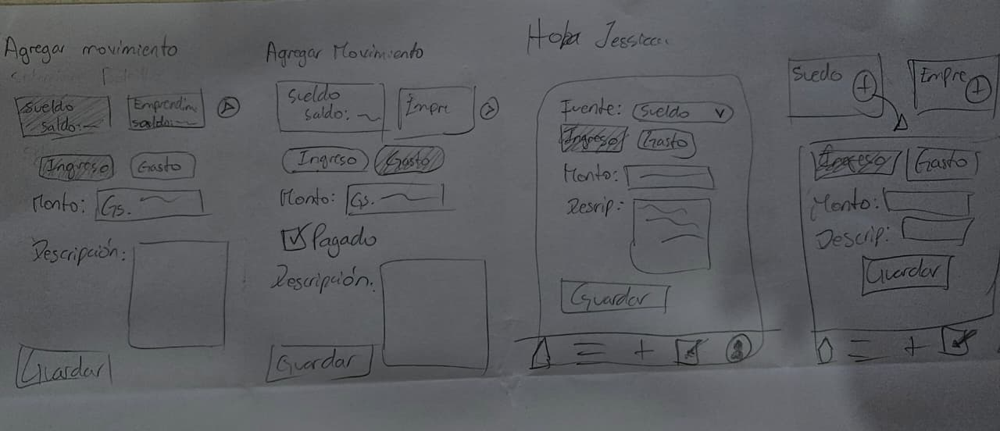
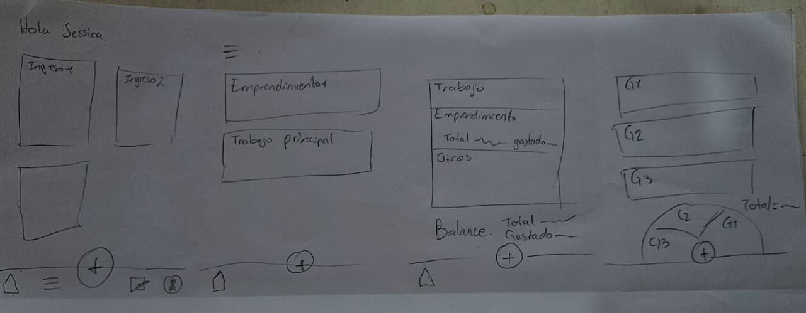
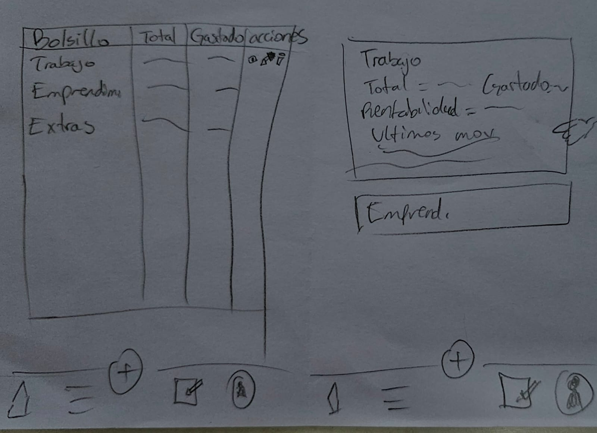
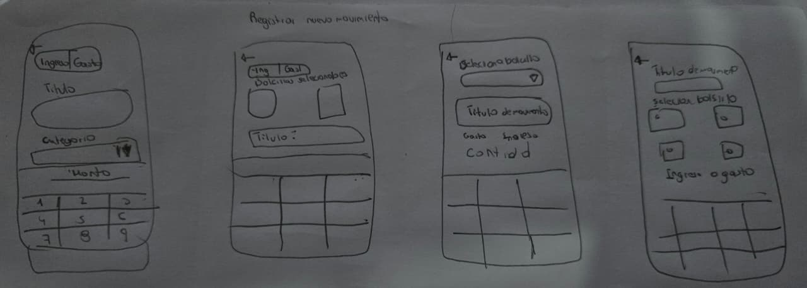
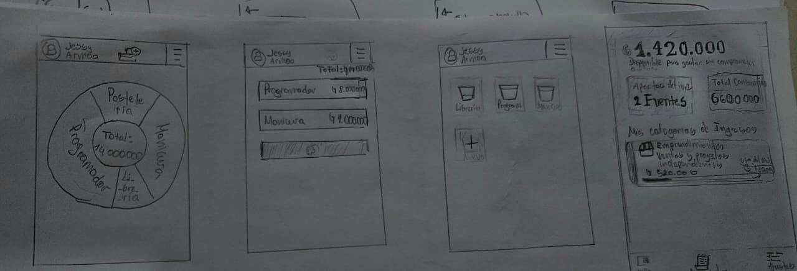
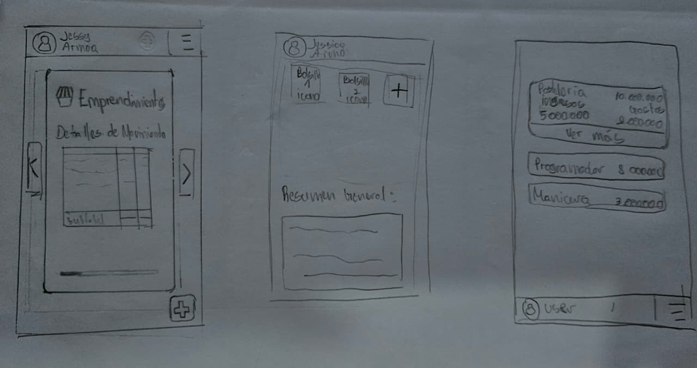
Documentamos la evolución iterativa de las tareas críticas a través de tres niveles de fidelidad (Papel → Wireframes Lo-Fi → Alta Fidelidad) y el Sistema de Diseño estandarizado de Bolsillos App.
Objetivo de la tarea: Verificar en menos de 5 segundos cuánto dinero libre hay en el bolsillo personal sin confundirlo con el fondo de reposición de insumos.
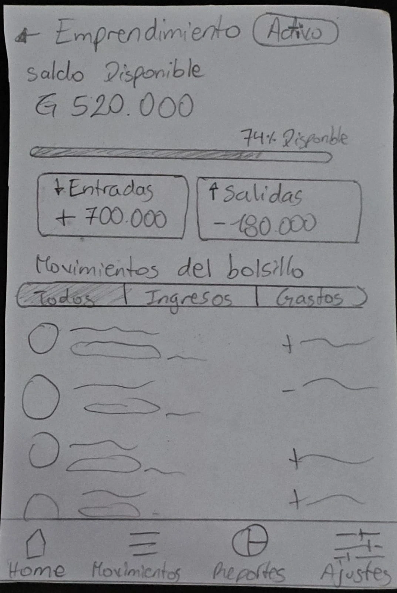
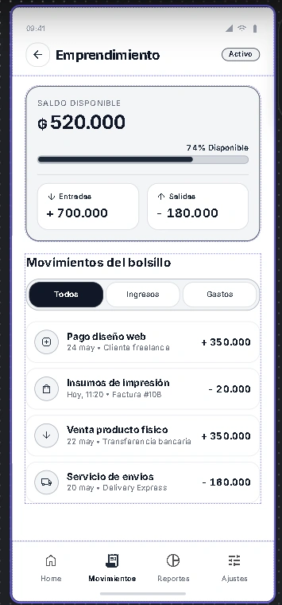
Objetivo de la tarea: Registrar un movimiento en ≤ 10 segundos completando únicamente 2 campos obligatorios (Monto y Bolsillo).
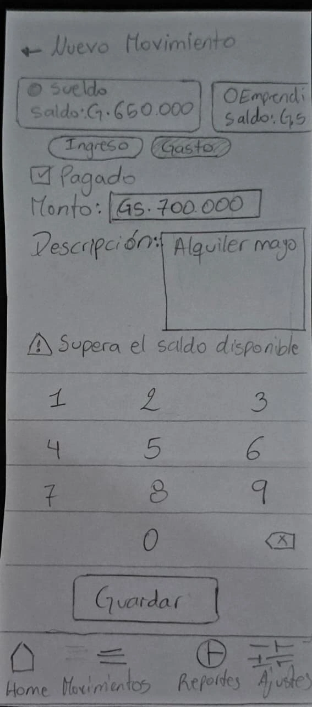
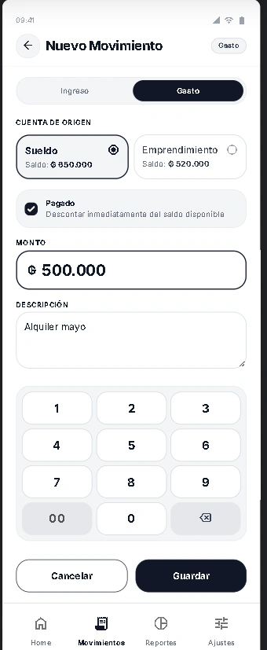
Objetivo de la tarea: Prevenir que la usuaria use dinero de otro bolsillo por accidente mediante una alerta comprensible en lenguaje coloquial.
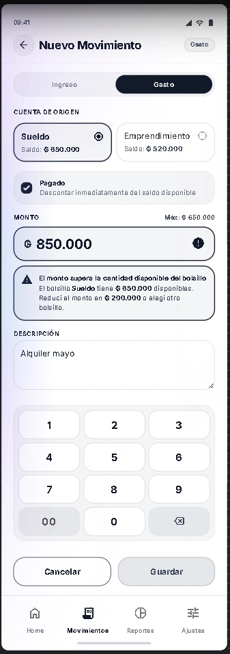
El Sistema de Diseño garantiza consistencia visual, velocidad de lectura frente al mostrador y cumplimiento de accesibilidad WCAG 2.1. Este mismo portafolio está construido utilizando sus tokens oficiales.
| Muestra Visual (Swatch) | Rol en el Sistema | Código HEX | Criterio de Uso y Accesibilidad (WCAG) |
|---|---|---|---|
|
Acción / Acento
|
Botón primario, enlaces activos, foco de teclado e indicadores clave. | #456EFE |
Reservado para 1 botón primario por pantalla y elementos interactivos principales. |
|
Texto Principal
|
Titulares, montos de bolsillos y cuerpo de lectura primario. | #23303B |
Contraste de 11.2:1 sobre fondo blanco #FFFFFF (Cumple nivel AAA).
|
|
Texto Secundario
|
Metadatos, subtítulos y etiquetas de apoyo. | #8E949A (ajustado a #596066 en
texto chico) |
Token base #8E949A; en textos menores a 16pt sobre blanco se oscurece a
#596066 para garantizar contraste ≥ 4.5:1 (AA).
|
|
Bordes / Tarjetas
|
Contornos de inputs, divisores y bordes de tarjetas de bolsillo. | #A4A9AE |
Delimitación clara de áreas interactivas y contenedores sin sobrecarga visual. |
|
Fondo Principal
|
Superficie base de pantallas y tarjetas principales. | #FFFFFF |
Combinado con gris suave #F8F9FA para separar secciones jerárquicamente. |
|
Alerta / Error
|
Sobregiro de bolsillo, errores de validación y severidad alta. | #FF6363 (#D93838 en texto)
|
Regla estricta: Acompañado siempre de ícono (⚠️) y texto descriptivo; nunca depender solo del color. |
|
Éxito / Confirmación
|
Confirmación de ingreso registrado y bolsillo saludable. | #13C999 (#0E8A68 en texto)
|
Acompañado de ícono de verificación (✓) y mensaje de confirmación explícito. |
| Dimensión del Sistema | Especificación Técnica | Aplicación en Bolsillos App |
|---|---|---|
| Tipografía (Google Fonts) | Familia Inter:• Títulos: Semibold 24pt • Cuerpo: Regular 16pt • Chico / Metadatos: Regular 14pt |
Alta legibilidad en pantallas móviles y números tabulares claros para lectura rápida de montos frente al mostrador. |
| Sistema de Espaciado | Escala modular en múltiplos de 8pt (8pt, 16pt,
24pt, 32pt).
|
Márgenes internos de tarjetas de bolsillo (24pt), separación entre elementos de formulario (16pt) y microespaciado (8pt). |
| Botones (3 Pesos y Estados) | • Primario: Relleno sólido #456EFE con texto blanco.• Secundario: Fondo transparente y borde 2px #456EFE.• Terciario: Solo texto interactivo. • Estados: Default, Hover/Focus y Disabled. |
Jerarquía inequívoca de acciones en modales de confirmación y registro de movimientos. |
| Inputs de Formulario | Estructura obligatoria de 4 capas: 1. Label siempre visible arriba del campo. 2. Placeholder de ejemplo. 3. Helper Text de guía. 4. Error Text con ícono ⚠️. |
Evita pérdida de contexto al escribir (nunca se usa el placeholder como reemplazo del label). |
| Iconografía y Navegación | • Iconografía de estilo Outline consistente. • Barra de navegación inferior fija con 4 accesos principales. |
Acceso con el pulgar a: 1. Bolsillos (Inicio), 2. Movimientos, 3. Insumos Pendientes y 4. Ajustes/Exportar CSV. |
| Reglas de Oro de Usabilidad y Accesibilidad | 1. Máximo 1 botón primario por pantalla. 2. Errores siempre con texto + ícono (⚠️). 3. Áreas táctiles mínimas de 48×48pt. |
Previene toques accidentales bajo estrés y garantiza accesibilidad motriz y visual. |
Estados interactivos con foco de teclado accesible
(:focus-visible):
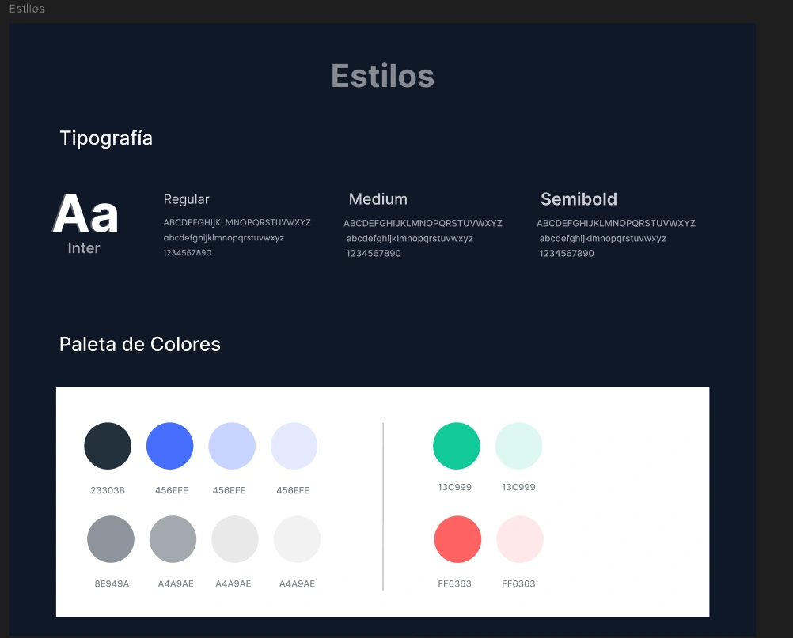
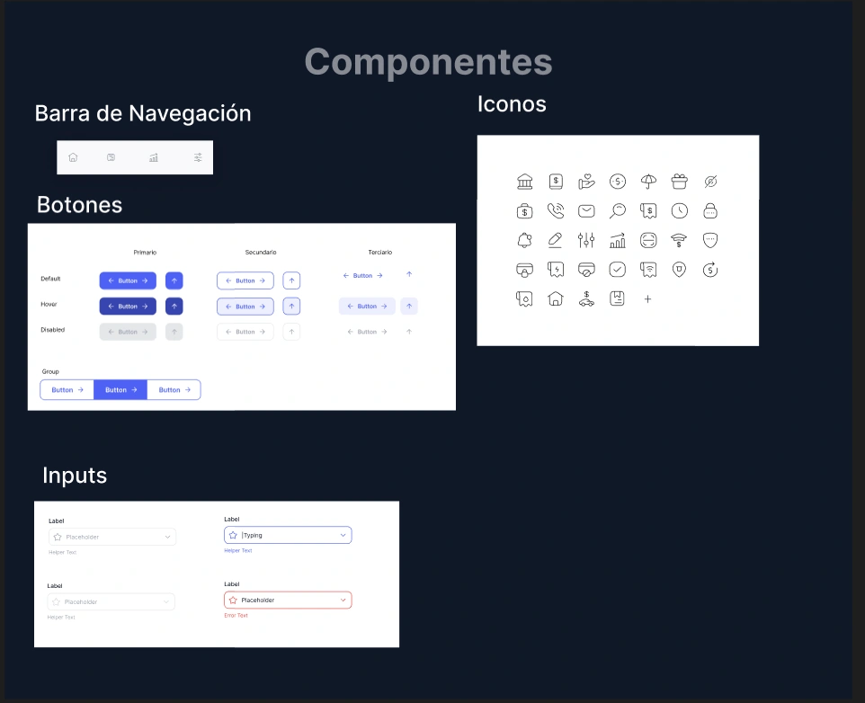
Auditoría formativa de los prototipos mediante métodos de inspección (Recorrido Cognitivo y Evaluación Heurística), pruebas empíricas con usuarios sobre wireframes (9 de noviembre de 2026) y planificación formal del test sobre la demo funcional.
Inspección realizada sobre los bocetos en papel antes de digitalizar los wireframes, clasificando la severidad de 1 (problema cosmético) a 4 (problema catastrófico de usabilidad). Estos hallazgos guiaron la primera iteración y luego fueron contrastados contra la prueba con usuarios.
| ID | Problema Encontrado en Papel | Heurística de Nielsen / Paso del Recorrido Afectado | Severidad (1–4) | Cambio Realizado al Pasar a Wireframes |
|---|---|---|---|---|
| H-01 | Ausencia de un control explícito para abortar o salir del formulario de carga de gasto; si el usuario entraba por error quedaba atrapado en el flujo. | H3: Control y libertad del usuario ("Salida de emergencia") / Paso de registro en Tarea 1. | ⛔ Severidad 4 — Crítica | Se incorporó un botón explícito "Cancelar" de peso secundario al lado de "Guardar", eliminando los bloqueos totales en la prueba posterior. |
| H-02 | Desorientación visual al filtrar movimientos de un bolsillo: no se distinguía qué filtro estaba activo entre Todos / Ingresos / Gastos. | H1: Visibilidad del estado del sistema / Paso de consulta de ingresos del mes en Tarea 2. | ⚠️ Severidad 3 — Mayor | Se añadió un indicador visual de pestaña activa con subrayado de alto contraste y etiqueta diferenciada para orientar al usuario. |
| H-03 | Advertencia de sobregiro escueta y rígida ("Supera el saldo disponible") que no informaba el monto disponible real ni ofrecía alternativas claras. | H5: Prevención de errores y H9: Ayudar a reconocer, diagnosticar y recuperarse de errores. | ⚠️ Severidad 3 — Mayor | Se rediseñó el modal con tono coloquial empático mostrando el saldo exacto del bolsillo, el excedente y opciones explícitas de recuperación. |
| H-04 | Falta de confirmación visual tras guardar un movimiento: el flujo regresaba a la pantalla de inicio bruscamente sin confirmar si el registro fue exitoso. | H1: Visibilidad del estado del sistema / Cierre del flujo de registro de gasto. | ℹ️ Severidad 2 — Menor | Se planificó e incorporó un componente de feedback inmediato (Toast / alerta verde de confirmación "Movimiento guardado"). |
Objetivo de la prueba: Confirmar si los controles de cancelación y las indicaciones visuales de pestañas activas resuelven la desorientación del usuario, y evaluar si el flujo de registro resulta natural y fluido.
La prueba se realizó utilizando wireframes estáticos (imágenes de las pantallas). A medida que el participante indicaba qué botón o elemento iba a tocar, un miembro del equipo —actuando como el "sistema"— cambiaba manualmente a la foto de la pantalla siguiente para simular la interactividad del flujo sin sesgar ni adelantar respuestas.
"Acabás de pagar la mensualidad del alquiler de tu departamento. Necesitás que la app registre que esa plata ya no está en tu cuenta de ingresos fijos." (Completada al ver el mensaje de confirmación).
"Querés saber exactamente cuánta plata entró a tu emprendimiento durante este mes, sin ver en qué la gastaste, solo lo que entró." (Completada al filtrar correctamente la pestaña 'Ingresos' en el bolsillo correspondiente).
"Conseguiste un nuevo trabajo de fin de semana y querés tener un espacio separado en la app para guardar y controlar solo esa plata." (Completada al volver al Home y ver la nueva tarjeta creada).
| Tarea | Completaron (de 3) | Tiempo Promedio | Errores (Total) | Pedidos de Ayuda | Facilidad Promedio (1–7) | Observación Clave de la Tarea |
|---|---|---|---|---|---|---|
| 1. Registrar Gasto | 3 de 3 (100%) | 45 seg | 1 | 0 | 6,0 / 7 | El botón "Cancelar" nuevo funcionó perfectamente: P2 lo presionó por error pero pudo rehacer el flujo rápido sin bloquearse. |
| 2. Ver detalle / Ingresos | 3 de 3 (100%) | 30 seg | 2 | 1 | 5,0 / 7 | Las pestañas ahora se notan visualmente, pero P2 y P3 intentaron deslizar (swipe) la pantalla con el dedo en vez de tocar la pestaña. |
| 3. Nuevo Espacio / Bolsillo | 2 de 3 (66,7%) | 1 min 10 seg | 4 | 2 | 3,5 / 7 | Confusión al buscar dónde crear un bolsillo: P1 buscó en "Ajustes" y P3 buscó adentro del bolsillo Sueldo antes que en el botón flotante "+". |
| N.º | Problema Consolidado | Tarea o Pantalla | Partic. (de 3) | Severidad | ¿Ya estaba? | Cambio Aplicado en el Diseño |
|---|---|---|---|---|---|---|
| 1 | El botón "+" flotante del Home no es intuitivo para crear un Nuevo Bolsillo. Los usuarios asumen que solo sirve para registrar Movimientos rápidos. |
Home (Tarea 3) | 2 de 3 | ⚠️ Severidad 3 — Mayor | Nuevo | Mover la opción de "Crear Nuevo Bolsillo" a una tarjeta explícita con borde punteado al final de la lista de bolsillos en el Home (además de un modal de acción clara "¿Qué deseas hacer?"), separándola de las transacciones. |
| 2 | El usuario intenta deslizar (swipe) con el dedo sobre la pantalla para cambiar entre las pestañas de 'Todos / Ingresos / Gastos', asumiendo el comportamiento natural de un celular. | Bolsillo / Movimientos (Tarea 2) | 2 de 3 | ⚠️ Severidad 3 — Mayor | Nuevo | Reforzar el diseño de las pestañas haciéndolas parecer botones tipo píldora/segmento con contorno claro e indicadores para señalar que el cambio responde a un "toque" explícito. |
| 3 | Falta de confirmación clara tras registrar un movimiento (la pantalla vuelve al Home de golpe generando duda de si se guardó). | Registro de gasto (Tarea 1) | 1 de 3 | ℹ️ Severidad 2 — Menor | Sí (H-04) | Añadir un componente "Toast" o alerta verde rápida de confirmación (#13C999 + ✓ "Movimiento guardado") antes de volver al Home. |
| Participante | Tarea | Resultado | Tiempo | Errores / Ayuda | SEQ (1–7) | Dónde dudó o se equivocó (Cita / Observación Textual) |
|---|---|---|---|---|---|---|
| P1 — Ana (22) | T1: Registrar Gasto | Sí | 40 s | 0 err / 0 ay | 7 / 7 | "Ah, es como transferir, súper rápido." |
| P1 — Ana (22) | T2: Ver Ingresos | Sí | 25 s | 0 err / 0 ay | 6 / 7 | "Fui a emprendimiento y toqué ingresos, listo." |
| P1 — Ana (22) | T3: Nuevo Bolsillo | Parcial | 1 m 30 s | 2 err / 1 ay | 3 / 7 | Fue a Ajustes, luego Reportes. Preguntó: "¿No lo tengo que configurar desde mi perfil?" |
| P2 — Carlos (28) | T1: Registrar Gasto | Sí | 50 s | 1 err / 0 ay | 5 / 7 | Tocó Cancelar por error: "Ups, menos mal que pude volver." |
| P2 — Carlos (28) | T2: Ver Ingresos | Sí | 35 s | 1 err / 1 ay | 4 / 7 | "Estoy deslizando pero no pasa de pestaña... ah, hay que tocar la palabra." |
| P2 — Carlos (28) | T3: Nuevo Bolsillo | Sí | 45 s | 0 err / 0 ay | 5 / 7 | Tocó el '+' flotante de inmediato: "Imaginé que el más era para todo lo nuevo." |
| P3 — Lucía (25) | T1: Registrar Gasto | Sí | 45 s | 0 err / 0 ay | 6 / 7 | Ninguna duda, completó el flujo de manera continua. |
| P3 — Lucía (25) | T2: Ver Ingresos | Sí | 30 s | 1 err / 0 ay | 5 / 7 | También intentó deslizar con el dedo: "Es la costumbre de otras apps." |
| P3 — Lucía (25) | T3: Nuevo Bolsillo | No | 1 m 15 s | 2 err / 1 ay | 2,5 / 7 | Buscó dentro del bolsillo Sueldo: "¿Tengo que dividir la cuenta desde acá adentro?" (Abandonó). |
La inclusión explícita del botón "Cancelar" eliminó los bloqueos totales que habíamos predicho en la evaluación heurística (nadie quedó atrapado en el formulario de gasto). El subrayado en las pestañas solucionó la desorientación visual; sin embargo, apareció un problema nuevo propio de simular un entorno móvil: los usuarios esperan transiciones táctiles (swipe). Además, descubrimos un problema de modelo mental que no vimos en papel: el botón "+" se asocia únicamente a transacciones rápidas, no a configuraciones estructurales como crear una cuenta o bolsillo nuevo.
Lo más desafiante de facilitar la prueba fue actuar como el "sistema": cambiar las pantallas manualmente requirió mucha coordinación para no adelantarnos a las acciones del participante ni mostrarle la pantalla incorrecta. Además, tuvimos que reprimir el impulso de ayudarlos cuando dudaban o buscaban crear el bolsillo en 'Ajustes'. Esto nos enseñó que lo que como diseñadores nos parece obvio por haberlo creado, no siempre encaja con las expectativas reales de usuarios externos.
Protocolo metodológico diseñado para evaluar la demo web interactiva de la Entrega Final con usuarios representativos, verificando si las correcciones aplicadas en Alta Fidelidad (tarjeta de "Nuevo Bolsillo", botones segmentados y Toast de confirmación) resuelven los problemas detectados.
Validar en la aplicación funcional si usuarios reales con múltiples ingresos logran registrar movimientos en ≤ 10 segundos (RNF Eficiencia), crear un nuevo bolsillo mediante la nueva tarjeta punteada sin buscar en Ajustes, distinguir su liquidez personal sin error (HU1) y responder adecuadamente ante la alerta de sobregiro (HU5).
Se evaluará a un mínimo de 5 participantes nuevos con perfil activo de múltiples fuentes de ingreso (trabajadores en relación de dependencia con emprendimientos paralelos o freelancers con ≥ 2 flujos de caja), que no hayan participado en las etapas de entrevistas ni wireframes y no sean compañeros del curso.
Contacto directo a través de redes de emprendedores locales, ferias universitarias y referidos externos mediante un cuestionario filtro corto (confirmar ≥ 2 fuentes de ingreso y uso habitual de banca móvil). Cada sesión será individual (presencial o videollamada con pantalla compartida), aplicando protocolo Think Aloud y firma de consentimiento informado.
| Métrica | Definición y Escala de Medición | Umbral de Éxito Esperado (Meta UX) |
|---|---|---|
| Tasa de Completitud (Efectividad) | Porcentaje de tareas completadas con éxito sin asistencia del moderador (Éxito / Éxito con dificultad / Fallo). | ≥ 85% de éxito en las tareas críticas (superando el 66,7% de la Tarea 3 en wireframes). |
| Tiempo en la Tarea (Eficiencia) | Segundos transcurridos desde que el participante inicia la acción hasta ver el Toast de confirmación. | ≤ 10 segundos promedio en registro rápido (RNF de HU2) y ≤ 25 segundos en creación de bolsillo. |
| Tasa de Errores | Cantidad de toques erróneos, selección equivocada de bolsillo o desvíos hacia Ajustes por tarea. | ≤ 1 error no crítico por participante por tarea. |
| SEQ (Single Ease Question) | Pregunta post-tarea: "En general, ¿qué tan fácil o difícil fue realizar esta tarea?" en escala Likert de 1 (Muy difícil) a 7 (Muy fácil). | Puntaje promedio ≥ 5,5 sobre 7 en todas las tareas. |
| SUS (System Usability Scale) | Cuestionario estandarizado final de 10 ítems al concluir toda la sesión (escala de 0 a 100 puntos). | Puntaje global promedio ≥ 75 puntos (Buena a Excelente usabilidad). |
Interactuá directamente con el prototipo de Figma aquí abajo o abrilo a pantalla completa.
/demoEspacio reservado para vincular la aplicación web interactiva alojada en la carpeta /demo
de este repositorio.
Tabla descriptiva de los ≥ 5 participantes externos (sin nombres reales para resguardar privacidad), detallando cantidad de fuentes de ingreso y contexto de uso.
Resultados cuantitativos por tarea frente al umbral de ≤ 10 segundos, puntaje SEQ (1–7) y cálculo del puntaje SUS final.
Comparativa visual de capturas Antes vs. Después documentando cómo se resolvieron en el código de la demo todos los hallazgos críticos y mayores.
Reflexión crítica del equipo sobre cómo la investigación empírica transformó la idea inicial de una app contable tradicional hacia un sistema de fronteras perceptuales rápidas.
Análisis de limitaciones del alcance académico y hoja de ruta futura (notificaciones bancarias automatizadas, lectura de comprobantes QR).
Balance transparente de dónde aportó velocidad la IA generativa (normalización de datos, soporte de maquetación) y qué decisiones críticas de diseño, empatía y priorización fueron exclusivamente humanas.